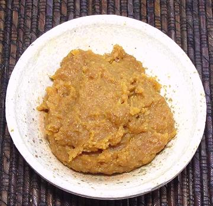

Doenjang Soybean Paste

This fermented soybean paste, similar to Japanese Miso, is an
essential ingredient in Korean cuisine, appearing in soups, stews,
sauces, dips and dressings. The photo specimen was purchased in a 1.1
pound tub from a Korean market in Los Angeles. Ingredients: water
soybean, wheat flour, salt, fermented soybean powder, rice wine,
wheat, soybean powder, malt, disodium inosinate, disodium guanylate.
More on Products from Beans
Buying:
Any market serving a Korean community will
have this essential paste, in various size tubs and jars. Not being
Korean, I buy the smallest tubs, 1.1 pounds.
Subst:
This is a common product, so you shouldn't
have to substitute. Japanese Miso is different in both flavor and
texture, but a similarly colored Miso can be used in an emergency.
Cooking:
This paste is used as an ingredient in
soups, stews, sauces, dips and dressings. It contributes body and
flavor. It may be cooked or not depending on the recipe.
bp_doenjz 150919 www.clovegarden.com
© Andrew Grygus - agryg@clovegarden.com - Photos on
this page not otherwise credited are ©
cg1.- Linking to and non-commercial use of
this page permitted.